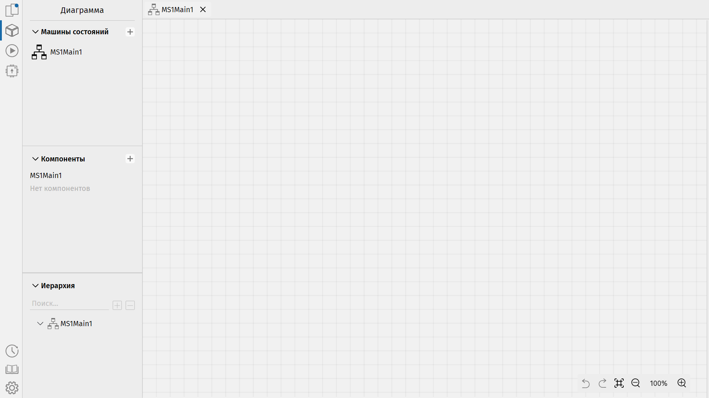

После создания проекта появится графическое поле редактирования машины состояний. Его можно перемещать с помощью зажатой правой кнопки мыши, масштабировать с помощью колёсика и кнопок в правом нижнем углу. Нажав на третью кнопку в правом нижнем углу, можно переключить отображение сетки.
